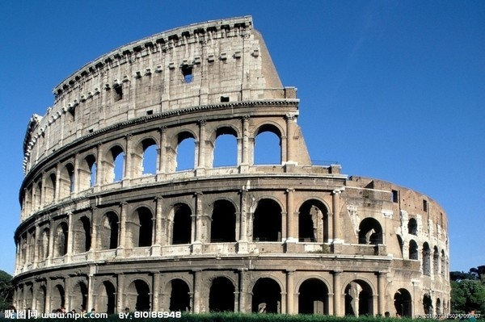

Introduction to Ancient Roman Architecture
Ancient Roman architecture, flourishing from the 8th century BCE to the 5th century CE, is renowned for its innovative engineering and grandeur. Key features include the extensive use of concrete, which allowed for more durable and larger structures; the development of the arch, vault, and dome, enabling the construction of expansive and impressive public spaces; and the adaptation of Greek classical orders into more decorative Roman Doric, Ionic, and Corinthian columns. Prominent examples of Roman architecture include the Colosseum, a massive amphitheater used for gladiatorial contests that could hold up to 50,000 spectators; the Pantheon, famous for its large dome and central oculus, which remains a marvel of engineering; and the Roman aqueducts, such as the Pont du Gard, which transported water across vast distances using a combination of arches and gravity. The legacy of Roman architecture is enduring, influencing the design of buildings and cities throughout history. The principles of Roman construction and urban planning have inspired architectural movements such as the Renaissance and Neoclassical, and their innovations in concrete, arches, and urban infrastructure continue to be foundational in modern architecture.